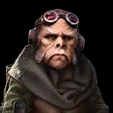
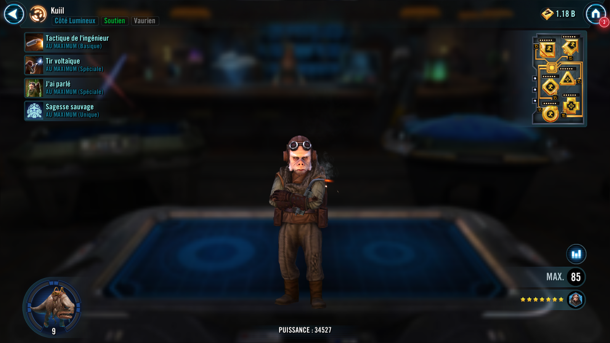
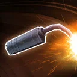
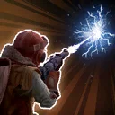
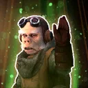

kuiil
A supportive mechanic who aids Droids and Scoundrels.

A supportive mechanic who aids Droids and Scoundrels.


Deal Special damage to target enemy and inflict Burning for 3 turns.

Deal Special damage to target enemy, Stun them for 1 turn, and inflict Shock and Speed Down for 3 turns. If the target already had Burning, inflict Expose for 2 turns. If the target already had Shock, inflict Shock for 3 turns on the weakest enemy that didn't already have it.

All allies recover Health equal to 20% of Kuiil's Max Health and Protection equal to 20% of Kuiil's Max Protection, doubled for Droid and Scoundrel allies. Scoundrel allies gain 25% Turn Meter. Scoundrel and Light Side Droid allies gain Mechanic's Savvy for 2 turns, which can't be copied.
Mechanic's Savvy provides different bonuses based on the ally's faction:
- Droids: +40% Offense; when defeated, revive with 80% Health and Protection
- Scoundrels: +20% Critical Chance, +40% Critical Damage and Defense Penetration
At the start of battle, other Droid and Scoundrel allies gain 40% of Kuiil's Max Health, Offense, and Potency, and they gain 40% of Kuiil's Max Protection until the first time he is defeated.
Kuiil and Droid allies recover 20% Protection whenever an enemy is inflicted with Shock.
While IG-11 is an ally: Kuiil and IG-11 have +10% Health Steal and +30% Potency. Kuiil can't be critically hit or Stunned, and whenever IG-11 is critically hit he recovers 20% Protection.